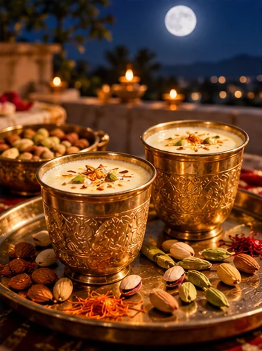
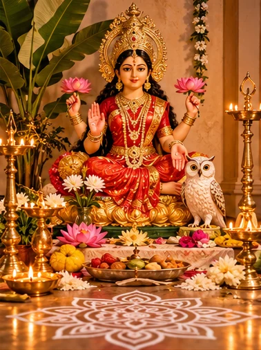
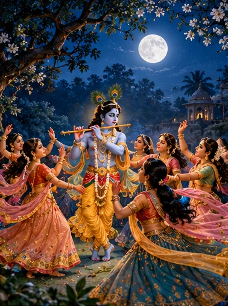
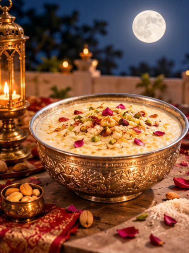
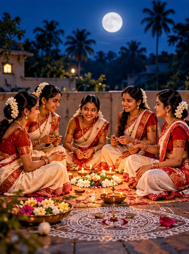
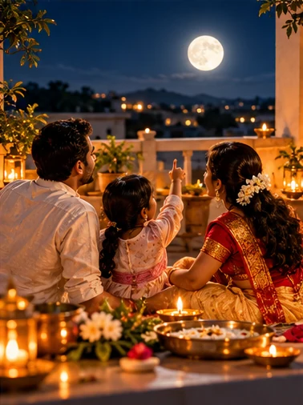
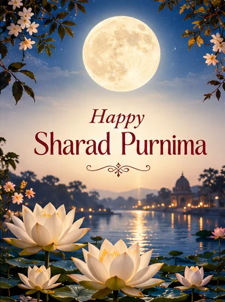

The night the autumn moon becomes sacred
When the rains depart, the moon returns
The monsoon has begun to loosen its hold on the Indian landscape. Clouds that once covered the sky give way to clear autumn evenings, and the moon rises over courtyards, fields and temple roofs. It is the full moon of Ashwin, celebrated as Sharad Purnima.
The name joins two simple ideas: Sharad, the autumn season, and Purnima, the full moon. Yet for families across India, the night carries more than the beauty of a changing season. It holds stories about prosperity, devotion, gratitude and the joy of being together.

In Bengal, where the sound of Durga Puja's dhak has only recently faded, homes begin preparing to welcome Maa Lakshmi. In Braj, devotees remember a moonlit night when Krishna's flute called the gopis of Vrindavan. Elsewhere, families gather to prepare milk, sweets and offerings beneath the open sky.
These are distinct regional and devotional traditions, not a single universal ritual. What joins them is the idea that an ordinary night can become meaningful when we pay attention to it.
The goddess who asks who is awake
The meaning of Kojagari
Imagine a village after sunset. Shops are closed, doors are latched, and the day's work is over. But from one home a lamp still glows. Inside, a family has gathered to pray to Lakshmi, the goddess associated with prosperity and well-being.
In a cherished Kojagari tradition, Lakshmi travels through the world on the full-moon night asking, 'Ko jagarti?' — 'Who is awake?' Those keeping vigil in devotion hope to receive her blessings. The name Kojagari, or Kojagiri, is popularly explained through this question.

Why should staying awake matter? The story is not merely an instruction to avoid sleep in the hope of becoming wealthy. It can also be read as an invitation to remain attentive: to recognise the blessings we already have, to care for our households, and to use prosperity with wisdom.
In Bengal, Kojagari Lakshmi Puja often follows the public splendour of Durga Puja. The celebration moves indoors. Families decorate their floors with alpana, arrange flowers and offerings, and welcome the goddess into the intimate world of the home. Customs differ between households and communities.
When Krishna's flute filled Vrindavan
The moonlit Rasa-lila
Another story associated with the autumn full moon begins not in a home, but in the forests of Vrindavan. The Bhagavata Purana describes an autumn night fragrant with blossoming jasmine. Krishna sees the beauty of the season and begins to play his flute.
The music draws the gopis toward him. Their gathering leads to the Rasa-lila, the celebrated divine dance. In many Vaishnava interpretations, this is not treated as an ordinary romance. It expresses the soul's longing for the Divine and the intensity of devotion that draws a person beyond everyday distractions.

The flute becomes a symbol of invitation; the dance, of loving participation. The story gives the full moon a different devotional meaning from the Lakshmi vigil, yet both ask the listener to become more aware of something greater than daily routine.
Different communities connect the Rasa-lila with Sharad Purnima in their own ways. The scriptural narrative is found in the Bhagavata Purana, Book 10, chapters 29–33; later festival observances have their own histories.
The moon, completeness and sixteen kalas
Belief, poetry and the natural world
The full moon has long inspired poetry and religious symbolism. In some Hindu traditions, the moon of Sharad Purnima is described as especially complete and associated with sixteen kalas, or aspects of fullness. The language is symbolic and theological; it is not an astronomical measurement of sixteen physical components.
The full moon occurs when the Moon appears fully illuminated from Earth. The clarity of an autumn sky may make it seem especially striking, but the idea that this moon is uniquely medicinal or scientifically more powerful than other full moons is not established by evidence.
The festival becomes richer, not poorer, when we can appreciate both perspectives: the beauty of the observable night sky and the meanings generations have attached to it.
Why a bowl of kheer waits beneath the moon
A simple offering, shared with love
In many households, Sharad Purnima is remembered through a bowl of kheer: milk and rice slowly cooked with sugar, cardamom, saffron or nuts. Some families prepare sweetened milk instead. The dish is offered in prayer and, according to local custom, placed where it receives moonlight.
Traditional explanations sometimes describe the moonlight as nectar-like, or amrit. This expresses reverence for nature and the sacredness of the occasion. It should not be mistaken for a scientifically proven change in the food's nutritional or medicinal properties.

The meaningful part of the custom is also wonderfully ordinary: someone takes time to cook, the family gathers, and the offering is shared as prasad. If placing a milk-based dish outdoors, keep it covered and follow food-safety guidance; do not leave it unrefrigerated for prolonged periods.
One moon, many ways to celebrate
From Bengal to Odisha and Maharashtra
In Bengal, Kojagari Lakshmi Puja brings lamps, alpana and prayers into the home. The timing after Durga Puja adds a particular feeling: the great public celebration has ended, but devotion continues around the household altar.
In Maharashtra, Kojagiri Purnima is associated with evening gatherings and sweet, often saffron-flavoured masala milk. In Odisha, Kumar Purnima is a distinctive celebration in which young women traditionally honour the Sun and Moon, sing songs and make special offerings. Practices vary by locality and family.

In parts of Braj, the night recalls Krishna's Rasa-lila. These traditions should not be flattened into one checklist. Each carries the memory of a region, its language and its ways of gathering.
A meaningful celebration, wherever home may be
Small rituals, lasting memories
An elaborate ceremony is not essential to experience the spirit of the festival. Families may clean a small prayer space, light a diya safely, offer flowers or a simple sweet, and read or listen to one of the traditional stories.
Children might enjoy tracing an alpana pattern on paper, helping prepare kheer, or asking why the Moon changes shape through the month. Those living outside India can make the evening an opportunity to share childhood memories and explain what the festival meant in their families.

The aim is not to reproduce every regional custom. It is to choose what feels authentic to your tradition, practise it respectfully, and leave space for questions and conversation.
The blessing of the full moon
An invitation to notice what matters
As the night becomes quiet, Sharad Purnima leaves us with an uncomplicated thought. Be awake to the people who love you. Be grateful for what sustains you. Remember that prosperity is meaningful when it is shared.
Whether the evening is marked by Lakshmi's worship, Krishna's story, a family gathering or a simple glance at the moon, the light of Sharad Purnima can become a moment of reflection.
May this autumn full moon bring peace, wisdom, health and abundance to every home.

Happy Sharad Purnima!May peace, joy and abundance illuminate your home.
Sources and traditions
Scriptural narratives, regional customs and scientific claims are distinguished throughout. Practices vary by community.
- Bhagavata Purana, Book 10, chapters 29–33 (Rasa-lila)
- Encyclopaedia Britannica — Lakshmi
- Encyclopaedia Britannica — Krishna
- USDA — Food safety and the two-hour rule
Confirm local tithi and puja muhurat with a location-specific panchang.